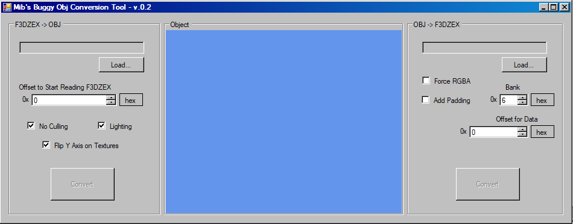

Legacy Tools
For current tools, click here
ZZPlayas
Legacy play-as Tool for the N64 Zelda titles.
Writes you a custom link file to rom/zzrt/zzrtl project
ZZConvert
Legacy conversion tool for the N64 Zelda titles.
Converts objex files into f3dex2 zobj files
Fits on your favorite floppy disk!
ZZRomtool
zzromtool is a filesystem management utility for the debug version of Ocarina of Time.
Extract the assets of your rom, change parts, and rebuild!
Special thanks to AriaHiro, Seedy-eye, E-Gor, Ideka, and Spaghetti for assisting with the tool!
ZZMapPorter
Map porting tool for OOT Debug.
Corrects and writes MM maps for OOT Debug
Click here for notes on MM Maps
Scroll of Time
Text Editor for Ocarina of Time
Lets you edit text in the OOT Debug rom (and expand it)
Hoo Hoo! Would you like to hear that again?
Scroll of Majora
Text Editor for Majora's Mask
Lets you edit text in a 1.0 decompressed MM Rom (and expand it)
You've met a terrible fate, haven't you?

ObjToF3DEXToObj
A legacy conversion tool for the N64 Zelda titles.
Converts obj files into f3dzex2 files
First accurate conversion tool!
ZLE2
Very old level editor for Ocarina of Time
Can edit pre-existing actors and objects on maps and more.
16-bit tool. Does not work on x64 systems!